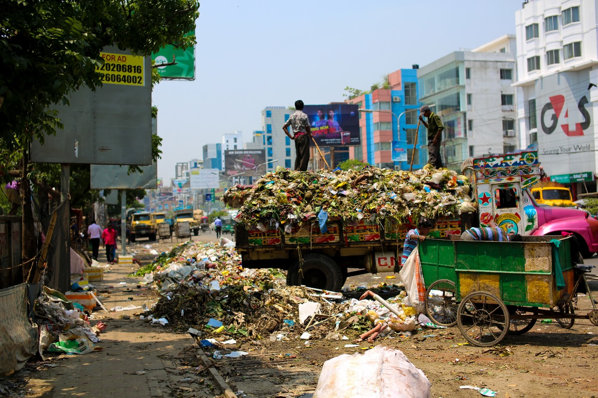
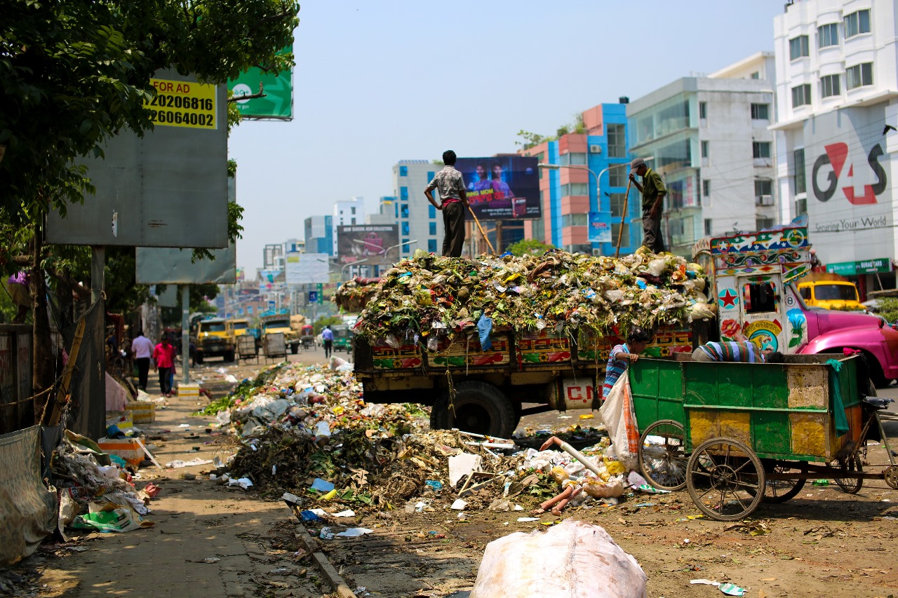
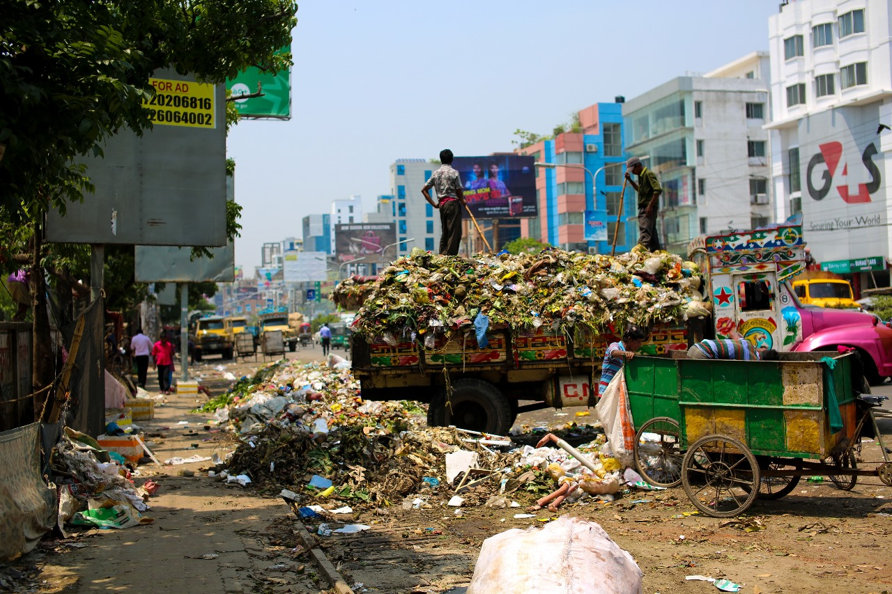

TEAM UP
TO CLEAN UP!
A clean up drive is a simple activity but still a powerful one.It not only clean the surroundings but also bring the people together.It refers to a community activity where people come together to clean their surroundings.It can happen in many places like parks, beaches,streets. The main aim is to make the environment cleaner and safe for everyone.It is a great and unique way to show our care towards our planet.The clean up drives also teach us a lesson about the importance of clean and green environment. They are in turn reflective of how each person's actions can amke a big difference
Clean up drives play a very significant role in cleaning the environment.First of all,they help to remove waste and trash from the surroundings , which makes the place look nicer and also prevents harmful substances from damaging the environment.Secondly, these drives can help to bring people together.When we work together as a team we tend to form stronger bonds with each other. Our community will be organising a clean up drive every month.The process will involve,deciding of a place that needs cleaning.These places could be a local park,a beach,or even a school.The time for organising the drive will be in accordance with people's availability.Then it will involve gathering of supplies like gloves, trash bags and cleaning tools.Tell your friends , family and neighbours about clean up drives.As the more people join,the more successful it will be.

TO CLEAN UP!